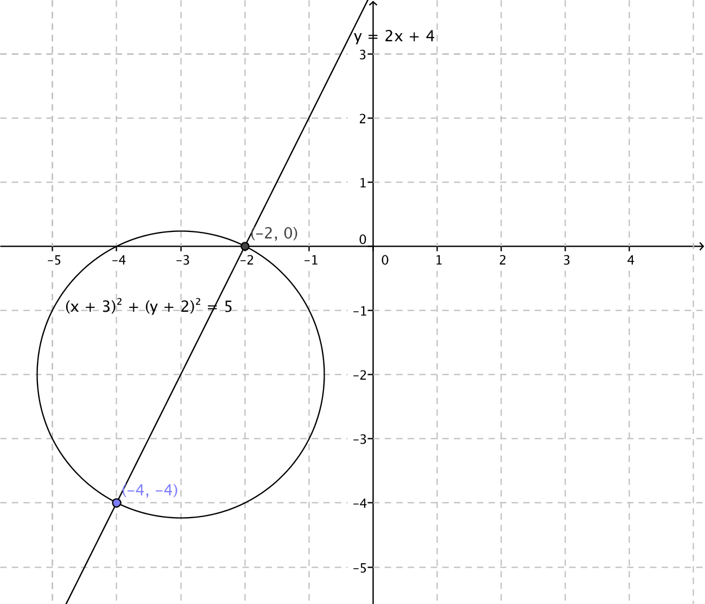

18. Repetition
Det sista som är kvar för kursen är att repetera. Kom ihåg att räkna uppgifter som inte är för lätta eller för svåra.
Uppgifter
- Lös följande ekvationer med absolutbelopp.
- \( \mid x-2 \mid = 3 \)
Vi får att \( x-2=3 \Leftrightarrow x=5 \) och \( -(x-2)=3 \Leftrightarrow x=-1 \).
- \( \mid -x-1 \mid = \mid 2x-1 \mid \)
Kvadrering ger \( (-x-1)^2=(2x-1)^2 \). Vi kommer till ekvationen \( 3x^2-6x=0 \Leftrightarrow 3x(x-2)=0 \) som har rötterna \( x=0 \) och \( x=2 \).
- \( \mid x+6 \mid = \mid x \mid \)
Kvadrera och kom fram till \( x^2 +12x + 36 = x^2 \). Lös ekvationen och kom fram till att \( x = -3 \).
- \( \mid x-2 \mid = 3 \)
- Lös följande olikheter.
- \( \mid 2x-3\mid < 3 \)
Vi börjar med att dela upp dubbelolikheten.
\( \mid 2x-3 \mid < 3 \) betyder att \( -3 < 2x -3 < 3 \) som har lösningarna \( 0 < x < 3 \).
- \( \mid 2x + 11 \mid \geq 3 \)
Vi får olikheterna \( 2x + 11 \geq 3 \) och \( -(2x+11) \geq 3 \).
Lös bägge och kom fram till \( x \leq -7 \) och \( x \geq -4 \).
- \( \mid x-7 \mid < 2 \)
Vi löser med en dubbeloikhet. \( -2 < x - 7 < 2 \). Förenkla och kom fram till \( 5 < x < 9 \).
- \( \mid 2x-3\mid < 3 \)
- Bestäm
- avståndet mellan punkterna \( (-2,1) \)och \( (4,3) \).
Avståndet är \( \sqrt{(x_2 -x_1)^2 -(y_2-y_1)^2} = \sqrt{(4-(-2))^2+(3-1)^2}= \sqrt{40}= 2\sqrt{10} \).
- mittpunkten mellan punkterna \( (-2,1) \) och \( (4,3) \).
\( x \)-koordinaten: \( x=\dfrac{x_2+x_1}{2}=\dfrac{4-2}{2} = 1 \).
\( y \)-koordinaten: \( y=\dfrac{y_2+y_1}{2}=\dfrac{1+3}{2} = 2 \).
Punkten är \( (1,2) \).
- ekvationen för linjen som går genom punkterna \( (-2,1) \) och \( (4,3) \).
Riktningskoefficienten, \( k=\dfrac{y_2-y_1}{x_2-x_1} = \dfrac{1-3}{-2-4} = \dfrac{1}{3} \)
Enpunktsformeln ger \( y-y_0=k(x-x_0) \Leftrightarrow y-1 = \dfrac{1}{3}(x-(-2)) \) som är \( y=\dfrac{1}{3}x+\dfrac{5}{3} \).
- avståndet mellan punkterna \( (-2,1) \)och \( (4,3) \).
- Rita bild och bestäm skärningspunkterna för cirkeln \( (x+3)^2+(y+2)^2=5 \) och linjen \( y=2x+4 \).
Bilden ser ut som

Skärningspunkterna får vi genom att lösa ekvationen
\( \left\{ \begin{array}{l} (x+3)^2 +(y+2)^2 = 5\\ y=2x+4\\ \end{array} \right. \)
som har lösningarna \( (-2,0) \) och \( (-4,-4) \).
- Bestäm ekvationen för den linje som går genom punkterna \( (2,-1) \) och \( (-1,5) \).
Riktningskoefficienten är \( k=\dfrac{y_2-y_1}{x_2-x_1} = \dfrac{-1-5}{2-(-1)}=-2 \).
Enpunktsformeln, \( y-y_0=k(x-x_0) \) ger \( y-(-1)=-2(x-2) \) som förenklas till \( y=-2x+3 \).
Linjen har ekvationen \( y=-2x+3 \).
- Bestäm även normalen genom punkten \( (2,-1) \) till linjen som du just bestämde.
Eftersom linjerna skall vara vinkelräta gäller att \( k_1 \cdot k_2 = -1 \).
Alltså \( -2 \cdot k_2 = -1 \Leftrightarrow k_2=\dfrac{1}{2} \).
Enpunksformeln ger \( y-y_0=k(x-x_0) \Leftrightarrow y-(-1)=\dfrac{1}{2}(x-2) \) som förenklas till \( y=\dfrac{1}{2}x-2 \).
- Bestäm även normalen genom punkten \( (2,-1) \) till linjen som du just bestämde.
- Bestäm utan räknare skärningspunkterna för linjerna \( y=3x-2 \) och \( y=-\dfrac{1}{2}x+5 \).
Vi får ekvationssystemet
\( \left\{ \begin{array}{l} y=3x-2 \\ y=-\dfrac{1}{2}x+5\\ \end{array} \right. \)
Ett sätt att lösa det är att kombinera och lösa ekvationen \( 3x-2=-\dfrac{1}{2}x+5 \) som har lösningen \( x=2 \).
Insättning av \( x=2 \) ger värdet \( y=4 \).
- Bestäm skärningspunkterna för cirkeln \( (x-3)^2+(y-1)^2=8 \) och linjen \( y=x-2 \).
Lös ekvationen
\( \left\{ \begin{array}{l} (x-3)^2+(y-1)^2=8 \\ y=x-2 \\ \end{array}\right. \)
Lättast går det att lösa ekvationssystemet på dator eller räknaren.
Punkterna är \( (1,-1) \) och \( (5,3) \).
- Bestäm avståndet från punkten \( (-3,5) \) till periferin av cirkeln \( x^2+y^2-4x+2y-20 = 0 \).
Cirkelns ekvatiion är \( (x-2)^2 + (y+1)^2 = 25\). Se till att du löser fram den!
Avståndet mellan cirkelns mittpunkt \( (2,-1) \) och punkten \( (-3,5) \) är \( \sqrt{61} \).
Avståndet mellan cirkleln och punkten är \( \sqrt{61} - 5 \approx 2,8 \) l.e.
- Bestäm det kortaste avstånd mellan cirklarna \( x^2 +y^2 +2x -y -5 = 0 \) och \( x^2 + y^2 -6x +y +9 =0 \).
Cirkalrnas ekvationer är \( (x+1)^2 + (y-\dfrac{1}{2})^2 = \dfrac{25}{4} \) och \( (x-3)^2 + (y+\dfrac{1}{2})^2 = \dfrac{1}{4} \). Se till att du löser fram den!
Avståndet mellan cirklarnas mittpunkter är \( \sqrt{17} \).
Avståndet mellan cirklarna är \( \sqrt{17} - (\dfrac{5}{2} + \dfrac{1}{2} ) = \sqrt{17} - 3 \approx 1,1 \) l.e.
- Bestäm normalen för linjen \( y=\dfrac{2}{5}x-1 \) som går genom punkten \( (2,-2) \).
För riktinginskoefficienten, \( k_n \), för normalen gäller att \( \dfrac{2}{5}\cdot k_n = -1 \Leftrightarrow k_n = -\dfrac{5}{2} \).
Normalens ekvation är \( y-y_0 ) k(x-x_0) \Leftrightarrow y+2=-\dfrac{5}{2}(x-2) \) som vi löser till \( y=-\dfrac{5}{2}x+3 \).
- Bestäm tangenterna för cirkeln \( (x+1)^2+y^2=5 \) som går genom punkten \( (4,5) \).
Bilda en ekvation för en linje som går genom punkten. Gå via avståndet mellan punkt och linje.
Tangenternas ekvationer ser ut som \( y-5=k(x-4) \). Dessa tangenter skall ha avståndet \( \sqrt{5} \) till punkten \( (-1,0). \)
Avståndet mellan en punkt och en linje ger att \( k=\dfrac{1}{2} \) och \( k=2 \).
Tangenterna är \( y_1=\dfrac{1}{2}x+3 \) och \( y_2=2x-3 \).
- Bestäm ekvationen för parabeln som går genom punkterna \( (-4,16) \), \( (-2,6) \) och \( (0,0) \).
Parabelns ekvation är \( y=Ax^2+Bx+C \), utnyttja det.
Vi bildar ekvationssystemet
\( \left\{ \begin{array}{l} 16 = A(-4)^2+B(-4)+C \\ 6 = A(-2)^2 + B(-2)+C \\ 0= A\cdot 0^2 +B\cdot 0 + C \\ \end{array} \right. \)
som har lösningarna \( A=\dfrac{1}{2} \), \( B=-2 \) och \( C=0 \).
Parabelns ekvation är \( y=\dfrac{1}{2}x^2-2x \).
- En landsvägstunnel har ett tvärsnitt som följer en parabel. Höjden för tunneln är 5,0 m och bredden är 8,0 m. En specialbredd lastbil har bredden 4,2 m och höjden 3,8 m. Ryms lastbilen genom tunneln?
Vi placerar parabeln i mitten längs med \( y \)-axeln. Då går parabeln genom punkterna \( (0,5) \), \( (-4,0) \) och \( (4,0) \).
Eftersom parablen är symmetrisk kring \( y \)-axeln är den av typ \( y = ax +c \). Eller så jobbar du med \( y = ax + bx + c \). Jobbar du med tre obekanta, a, b och c, behöver du bilda tre ekvationer, med två obekanta, a och c, behöver du två ekvationer.
Bilda ett ekvationssystem och lös det. Kom fram till att parabelns ekvation är \( y = -\dfrac{5}{16}x^2 + 5 \).
4,2 meter bred betyder att 2,1 meter är på bägge sidor om mitten. Höjden vid 2,1 meter är \( -\dfrac{5}{16}\cdot 2,1^2 + 5 = 3,6 \) m.
Alltså rymms lastbilen inte genom tunneln.
- Bestäm arean av den triangel som begränsas av punkterna \( (1,3) \), \( (-3,-1) \) och \( (3,-1) \).
Rita bild och fundera. På vilka olika sätt kan du bestämma en triangels area?
Vi kan bestämma arean med \( \dfrac{1}{2}ab\sin \alpha \).
Bestäm längden av två ben och vinkeln mellan linjerna. Arean är 12 a.e.
- Bestäm arean av det mindre område som uppstår då linjen \( y=x \) skär cirkeln \( x^2+(y-2)^2=4 \).
Rita bild, bestäm skärningspunkter, storlek av sektor och sedan är du nästan där.
Situationen är följande:

Skärningspunkterna mellan linjen och cirkeln är \( (0,0) \) och \( (2,2) \). Kom ihåg att bestämma dessa!
Vi behöver veta storleken av sektorn som bildas. Cirkelns mittpunkt är \( (0,2) \) och ekvationerna för linjerna som bildas mellan skärningspunkterna och cirkeln mittpunkt är \( y = 2 \) och \( x = 0 \). Bestäm dessa!
Vinkeln mellan dessa är 90o. Bestäm den! Radien för cirkeln är 2 .
Storleken av sektorn är \( A = \dfrac{90^{\circ}}{360^{\circ}} \cdot \pi \cdot 2^2 = \pi \) a.e.
Arean av triangeln är \( A = \dfrac{1}{2} ab \sin \alpha = \dfrac{1}{2} \cdot 2^2 \cdot \sin 90^{\circ} = 2 \) a.e.
Det lilla området, segmentent, har arean \( \pi -2 \approx 1,14 \) a.e.